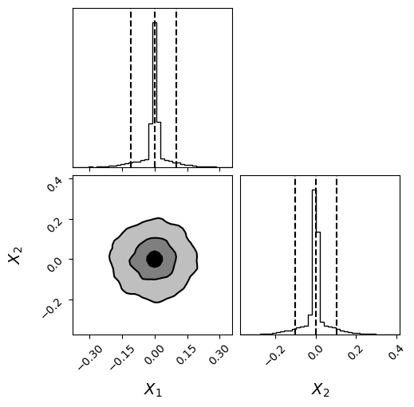

Peak Sampling New#
import numpy as np
import matplotlib.pyplot as plt
from scipy.stats import beta
from scipy.special import logsumexp
from scipy.special import logsumexp
from scipy.signal import correlate
from statsmodels.tsa.stattools import acf
import morphZ
import corner
def log_plus(x,y):
if x > y:
summ = x + np.log(1+np.exp(y-x))
else:
summ = y + np.log(1+np.exp(x-y))
return summ
def log_sum(vec):
r = -np.Inf
for i in range(len(vec)):
#print('element:',vec[i])
r =log_plus(r, vec[i])
#print(r)
return r
def lnlikefn(x):
u = 0.01
v = 0.1
x1 = np.sum(-(x**2)/(2*v**2))-len(x)*np.log(np.sqrt(2*np.pi)*v)
#print(x1)
x2 = np.sum(-((x-0)**2)/(2*u**2))-len(x)*np.log(np.sqrt(2*np.pi)*u)#+np.log(100)
#print(x2)
return log_plus(x1,x2)
def lnpriorfn(x):
if np.any((x < -0.5) | (x > 0.5)): # Check if x is outside the cube
return -np.inf
return 0.0
def lnprobfn(x):
return lnlikefn(x) + lnpriorfn(x)
import numpy as np
import dynesty
from dynesty import utils as dyfunc
ndim = 20 # number of parameters/dimensions
# nlive = 20 * ndim # number of live points (analogous to nwalkers)
nlive = 25 * ndim # number of live points (analogous to nwalkers)
# Define the prior transform: maps a unit cube (0,1) to the prior volume.
# For a uniform prior between -0.5 and 0.5 for each parameter:
def prior_transform(u):
# u is a 1D array of ndim values in [0, 1]
return -0.5 + u # scales u to [-0.5, 0.5]
# Create the nested sampler instance.
# Run the nested sampling.
# Note: print_progress=True shows the progress.
NN = 1
log_z_NS = np.zeros(NN)
log_z_NS_err = np.zeros(NN)
for i in range(NN):
sampler = dynesty.NestedSampler(lnlikefn, prior_transform, ndim, nlive=nlive)
sampler.run_nested(dlogz=0.00000001, maxiter=2000000,print_progress=True)
res = sampler.results
log_z_NS[i] = res.logz[-1]
log_z_NS_err[i] = res.logzerr[-1]
# Get posterior samples.
# dynesty provides weighted samples; here we compute equal-weight samples.
samples_ns, weights = res.samples, np.exp(res.logwt - res.logz[-1])
posterior_samples = dyfunc.resample_equal(samples_ns, weights)
45372it [01:40, 452.83it/s, +500 | bound: 585 | nc: 1 | ncall: 1762567 | eff(%): 2.603 | loglstar: -inf < 73.275 < inf | logz: 1.044 +/- 0.307 | dlogz: 0.000 > 0.000]
print("Posterior samples shape:", posterior_samples.shape)
plt.hist(posterior_samples[:,4],color='black',density=True ,bins=100,label='NS samples')
# plt.hist(samples[:,4],color='red',density=True ,bins=100,alpha=0.5,label='thinned samples')
# plt.hist(tree_samples[:,2],color='blue',density=True ,bins=100,alpha=0.5,label='tree samples')
plt.legend()
print(f'NS log(z): {res.logz[-1]} +/- {res.logzerr[-1]}')
Posterior samples shape: (45872, 20)
NS log(z): 1.044125637626962 +/- 0.3067044054689819
fig = corner.corner(
posterior_samples[:,:2], bins=40,labels=[r"$X_{1}$",r"$X_{2}$"],label_kwargs = {"fontsize": 14},truth_color="dodgerblue",hist_kwargs={"density": True},quantiles=[0.05, 0.5, 0.95],
show_titles=False,
fontzise=24,
title_fmt=".2f",
plot_datapoints=False,
fill_contours=True,
levels=(0.5, 0.8, 0.95),
smooth=1.0
)
plt.show()

# import logging
# from morphZ import setup_logging; setup_logging(level=logging.INFO)
samples = posterior_samples[::50,:] # total_samples[::20,:]
tot_len , ndim = samples.shape
print('Total samples:', tot_len, 'Dimensions:', ndim)
log_prob = np.zeros(tot_len)
for i in range(tot_len):
log_prob[i] = lnprobfn(samples[i,:])
# log_p_estimate = morphZ.evidence(
# samples,
# log_prob,
# lnprobfn,
# n_resamples=2000,
# thin=1,n_estimations=2,morph_type="pair",kde_bw="scott",plot=True,output_path='./morphZ_peak_sampling_new')
# #print('True:', np.log(2))
# print('True for 1 amp peak:', np.log(2))
Total samples: 918 Dimensions: 20
import numpy as np
import harmonic as hm
# Instantiate harmonic's chains class
chains = hm.Chains(ndim)
chains.add_chains_2d(samples, log_prob,nchains_in=10)
chains_train, chains_infer = hm.utils.split_data(chains, training_proportion=0.5)
model = hm.model.RQSplineModel(ndim, n_layers=32, standardize=False)
epochs_num = 35
# Train model
model.fit(chains_train.samples, epochs=epochs_num, verbose=True)
# Instantiate harmonic's evidence class
ev = hm.Evidence(chains_infer.nchains, model)
# Pass the evidence class the inference chains and compute the evidence!
ev.add_chains(chains_infer)
# after ev.add_chains(chains_infer)
lnZ, lnZ_std = ev.compute_ln_evidence()
print("ln Z =", lnZ)
print("ln (std(Z)) =", lnZ_std)
(array([ 0.17253399, 0.34506799, 0.17253399, 0.17253399, 1.03520396,
0.69013598, 1.38027195, 0. , 0.51760198, 1.03520396,
1.89787393, 1.55280595, 7.41896174, 21.22168127, 14.14778751,
2.9330779 , 1.38027195, 2.24294192, 1.20773796, 0.86266997,
1.03520396, 0.86266997, 0.69013598, 0.17253399, 0.69013598,
0. , 0.34506799, 0.51760198, 0.17253399, 0.34506799]),
array([-0.20955052, -0.19421729, -0.17888407, -0.16355084, -0.14821762,
-0.13288439, -0.11755117, -0.10221794, -0.08688471, -0.07155149,
-0.05621826, -0.04088504, -0.02555181, -0.01021859, 0.00511464,
0.02044786, 0.03578109, 0.05111432, 0.06644754, 0.08178077,
0.09711399, 0.11244722, 0.12778044, 0.14311367, 0.15844689,
0.17378012, 0.18911335, 0.20444657, 0.2197798 , 0.23511302,
0.25044625]),
<BarContainer object of 30 artists>)
fig = plt.figure(figsize =(10, 7))
ax = fig.add_subplot(111)
log_p_estimate = np.array(log_p_estimate)
true_z = np.log(2)
plt.hlines(y=true_z,colors='grey',linestyle='dotted',xmin=0.5, xmax=5.5,label='True log(z)')
x1= [1,2,3,4]
#median = [np.mean(z_GSS_mcmc),res.logz[-1],np.mean(log_p_estimate)]
#error = [np.std(z_GSS_mcmc),res.logzerr[-1],np.std(log_p_estimate)]
median = [np.mean(log_z_NS),np.mean(log_z_NS),np.mean(log_p_estimate[:,0]),np.mean(log_p_estimate[:,0])]
error = [np.mean(log_z_NS),np.mean(log_z_NS_err),np.std(log_p_estimate[:,0]),np.mean(log_p_estimate[:,1])]
ax.errorbar(x1, median, yerr=error, fmt='+', color='black', capsize=5)
ax.set_xticks(x1,labels=[r'NS$_{Emp}$',r'NS$_{Theo}$', r'Morph$_{Emp}$',r'Morph$_{RMSE}$'],fontsize=10)
ax.set_ylabel('log(z)')
ax.legend()
<matplotlib.legend.Legend at 0x70a4105dac60>
# for row in total_samples:
# np.random.shuffle(row)
samples = posterior_samples[::5,:] # total_samples[::20,:]
tot_len , ndim = samples.shape
log_prob = np.zeros(tot_len)
for i in range(tot_len):
log_prob[i] = lnprobfn(samples[i,:])
print(f'Ncal {tot_len} Ndim {ndim}, log prob {len(log_prob)}')
N_new = 10000
target_kde = KDE_approx(samples[:int(tot_len/2),:])
NN = 25
log_p_estimate = np.zeros((NN,3))
samples_mor = samples[int(tot_len/2):,:]
log_post = log_prob[int(tot_len/2):]
print(samples_mor.shape)
for gg in range(NN):
print(f"Iteration : {gg+1}\n",end="")
samples_prop = target_kde.resample(N_new)
log_prop = target_kde.logpdf_kde(samples_prop)
log_p_estimate[gg,:] , log_z = bridge_sampling_ln(lnprobfn, target_kde.logpdf_kde, samples_mor,log_post, samples_prop)
print(f'\n true:{np.log(2)}' )
Ncal 7554 Ndim 20, log prob 7554
---------------------------------------------------------------------------
NameError Traceback (most recent call last)
Cell In[9], line 14
12 print(f'Ncal {tot_len} Ndim {ndim}, log prob {len(log_prob)}')
13 N_new = 10000
---> 14 target_kde = KDE_approx(samples[:int(tot_len/2),:])
16 NN = 25
17 log_p_estimate = np.zeros((NN,3))
NameError: name 'KDE_approx' is not defined